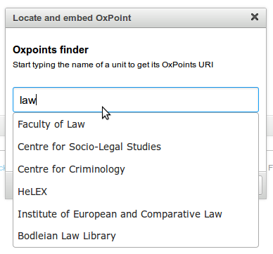

This plugin allows you to embed a list of search results from OXAM in your page, allowing you to show exams from a particular subject, course or year.
-
Click on the OxPoints icon.

-
Location: this is the OxPoint ID. Type the name of an
instituation within the university, and the field will show a set of
relevant entities. Once you've found the correct one, click its name to
set the OxPoint ID.

- Title: tick this option to include the title of the location in the embedded content.
- Include Map: tick this option to also include a map of the location (using Google Maps). Map Height/Width determine the dimensions of the map.
- Address: tick this option to include the address of the location.
- Homepage: tick this option to include a link to the homepage of the institution.
-
Click OK to embed the OxPoint at the current cursor position.

-
If you wish to edit the OxPoint after embedding it, right click on the placeholder and click 'Edit OxPoint' to change the settings and location.
A dialog will appear with several available settings.